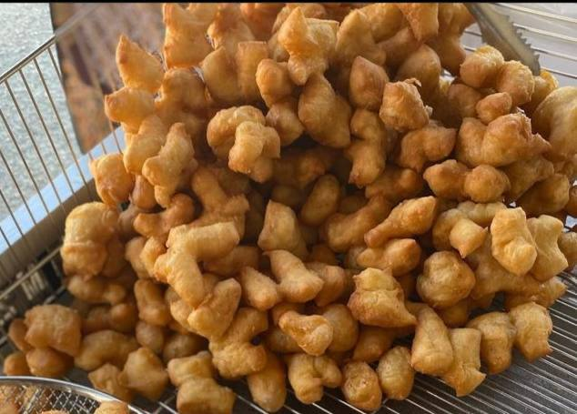
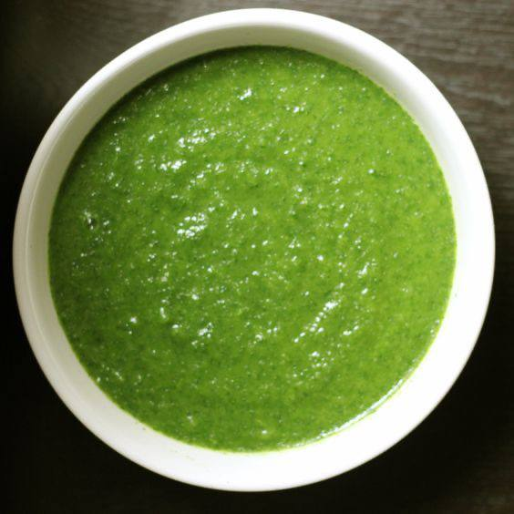
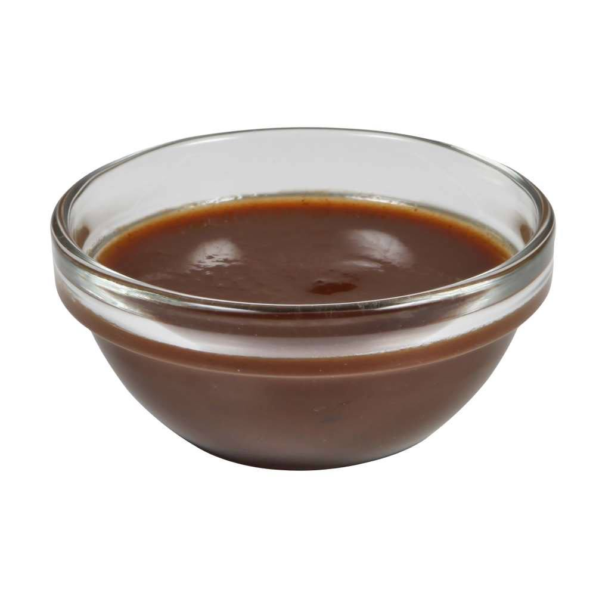
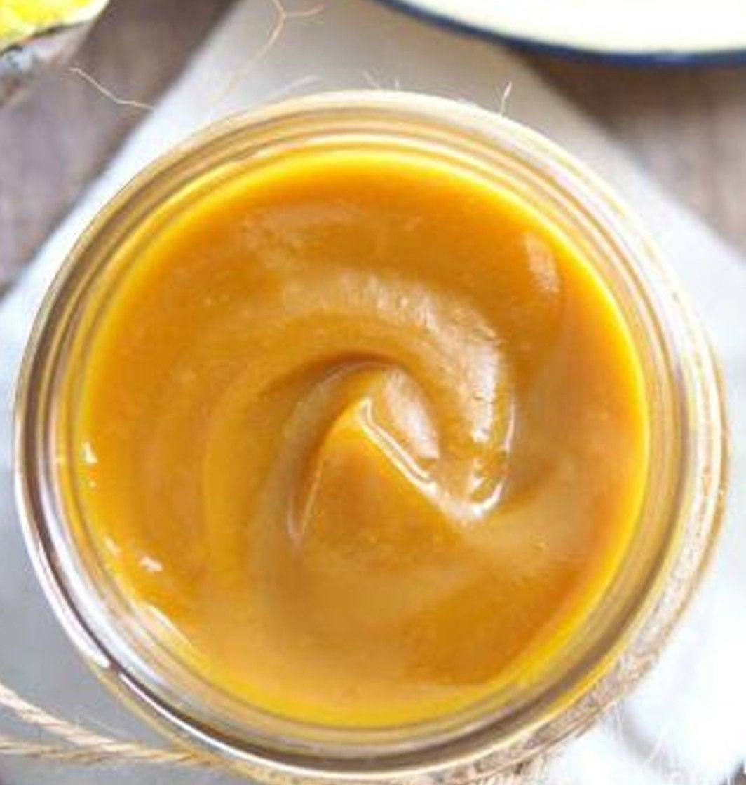

The Secret Ingredients
| Chakuey |  | The dough is made from premium wheat flour, salt, sugar and water. Then kneaded with love and deep fried until brown. Suitable to be served for breakfast or afternoon tea time |
| Pandan Dipping Sauce |  | Made from original pandan leaves that are blended until crushed and cooked with water and custard flour until cooked |
| Chocolate Dipping Sauce |  | Using a melted premium chocolate cooked with whipped cream |
| Kaya Dipping Sauce |  | made from eggs cooked with homemade caramel sauce and premium coconut milk |